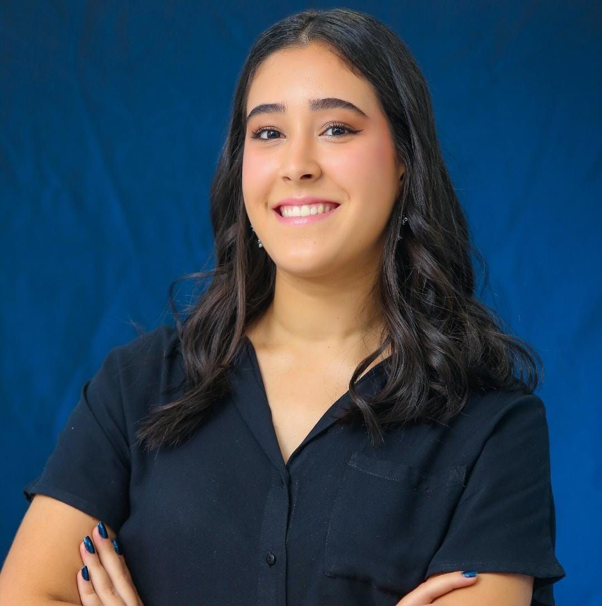

|

Mariane de Moraes Lima
Meu nome é Mariane, tenho 18 anos e sou estudante de Sistemas de Informação. Neste projeto, fiquei responsável pelo desenvolvimento da seção de contatos do site, facilitando a comunicação entre a empresa e seus clientes.
Acessar linkedin
|
|
Nathan Silva Freitas
Meu nome é Nathan, tenho 20 anos e sou estudante de Sistemas de Informação. Neste projeto, fui responsável pelo desenvolvimento da página inicial (Home) do site, buscando proporcionar uma apresentação clara, organizada e intuitiva, garantindo uma boa experiência aos usuários.
Acessar linkedin
|
|

Hiarly de Souza Cunha
Meu nome é Hiarly, tenho 18 anos e sou estudante de Sistemas de Informação. Neste projeto, fui responsável pelo desenvolvimento da seção de produtos do site, buscando garantir uma apresentação organizada, informativa e acessível, proporcionando aos usuários uma melhor experiência na visualização dos produtos.
Acessar instagram
|
|
.jpeg)
Hsu San Lin
Meu nome é San, tenho 18 anos e sou estudante de Sistemas de Informação. No desenvolvimento deste projeto, fiquei responsável pela área de serviços do site, atuando na estruturação e implementação de suas funcionalidades, com foco na organização e na experiência dos usuários.
Acesar github
|